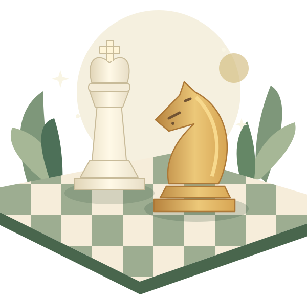
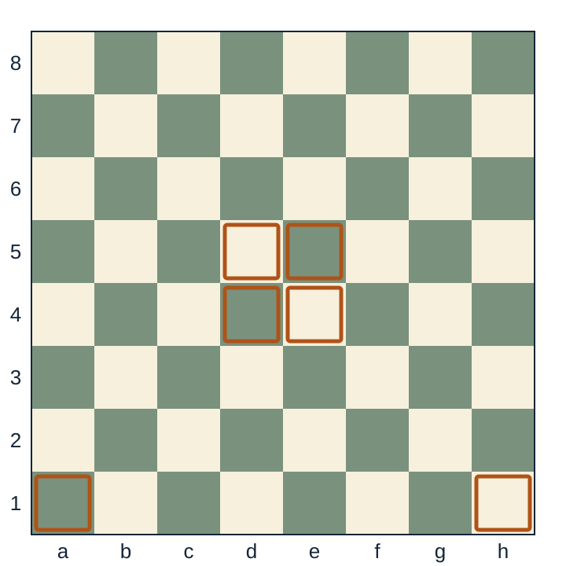

Learn one to one
Individual online coaching shaped around your pace, goals, and next challenge.
Explore private lessons ↗More than a game. A way to grow.
A welcoming place to learn chess, think carefully, and enjoy the challenge—one move at a time.
For young beginners, growing players, and lifelong learners.

A place at the board
Personal attention, shared discoveries, and programs that meet learners where they are.
Individual online coaching shaped around your pace, goals, and next challenge.
Explore private lessons ↗Friendly online sessions for ages 6–10 and 11–15, with opportunities to learn together.
Explore group classes ↗Chess enrichment for schools and community groups, built around your setting.
Explore school programs ↗
From the Young Minds curriculumA clear path, one lesson at a time
Our Young Minds curriculum introduces chess through a structured sequence of 52 lessons. Clear board activities give children space to explore each idea.
Homework and plain-language parent guidance help learning continue between lessons—even when the grown-ups are new to chess too.
Meet the learning materials ↗The learning experience
Get to know the board, the pieces, and the reasons behind a move.
Put ideas into action with guided play, questions, and board activities.
Talk through decisions, learn from mistakes, and take the next step with encouragement.
Good questions
No. Beginners can start with the board and pieces. A complimentary evaluation helps us recommend a suitable starting point.
Yes. The Young Minds parent guide explains the ideas in plain language. Parents can read questions aloud and encourage children to explain their thinking.
Private and group coaching are available online. Contact us about in-person school and community programs and local availability.
Send an enquiry through our contact page. We’ll discuss your learner’s experience, goals, and available class options before you choose a program.
Your next move
Tell us a little about your learner. We’ll help you choose a program.